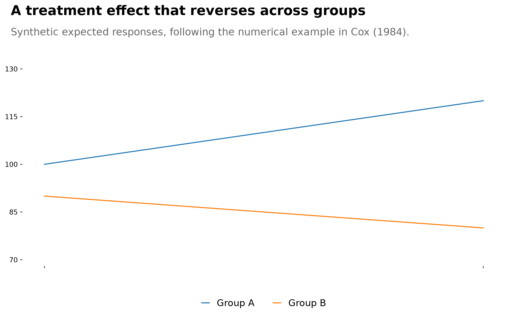

Can the effect of one explanatory variable be understood independently of the values of other variables?
In the simplest regression model, the effects of explanatory variables are assumed to combine additively. Such a representation allows a complicated response surface to be described through a collection of simpler function. However, when one variable modifed the effect of another, this additive representation becomes inadequate. The resulting departure from additivity is described as an interaction.
The meaning of interaction is nevertheless subtler than the presence of a product term in a regression equation. Interaction depends on the scale on which the response is measured, on the scientific roles assigned to explanatory variables, and on the structure of the experimental or observational data.
1 Distributional Structure and the Meaning of Interaction
1.1 From additivity of effects to additivity of distributions
Statistical interaction is usually formulated in terms of the conditional expected response. However, two treatments can produe the same difference in average response while having considerably different effects on variability, skewness, or other features. To understand this distinction, suppose that a response \(Y\) is observed under two treatments, with cummulative distribution functions
\[
F_1(y) = \P(Y\leq y \mid T=1), \quad F_2(y) = \P(Y\leq y \mid T=2)
\]
Assume initially that treatment 2 changes the response from treatment 1 by a constant amount \(\tau\), regardless of the experimental unit. If \(Y_1\) denotes the response under the first treatment, this assumption can be represented by
This is the distributional additivity condition corresponding to equation (2.1) of Cox (1984). It asserts that the two distributions differ only by a translation. A notable consequence is
More generally, the centered distributions must be identical. Translation changes the location but not the shape of a distribution. Hence, constant variance, constant skewness, and constant higher standardized moments are all consequences of this strong additive assumption. Hence:
Additivity of distributions is a stronger requirement than additivity of expectations.
1.2 Quantile representations and distributional interaction
A useful way to examine distributional additivity is through the quantile functions
for every quantile level \(p\). If corresponding quantiles are plotted against one another, the points should lie on a straight line with slope one and intercept \(\tau\). This provides the motivation for using a quantile-quantile plot to assess distributional additivity. Q
When this condition is violated, the displacement may instead depend on the response level. Define
\[
F_2(y) = F_1\{y-\tau(y)\}
\]
Provided the distribution functions are suitably invertible,
\[
\tau(y) = y - F_1^{-1}\{F_2(y)\}
\]
This quantity is the displacement required to match the distribution under treatment 2 to the corresponding position under treatment 1. If \(\tau(y)\) is constant, a translation model is appropriate. If it varies systematically with \(y\), the treatment effect is different effect is different at different parts of the response distribution.
For example, a treatment might produce only a small improvement among units with initially low responses but a much larger improvement among units with high responses. Even if the average treatment effect can be represented by a single number, that number does not describe the distribution change.
The first treatment comparison produces points approximately following the unit-slope reference line. The second comparison produces a steeper relationship because the upper quantiles increase more strongly while the lower quantiles increases less strongly.
1.3 Transformations and variance stabilization
When the distributions cannot be described by a common translation, one possibility is to transform the response.
Let \(h\) be a monotonic transformation and consider the transformed response \(h(Y)\). The objective may be to find a transformation under which the distributions become approximately additive or, more precisely, have nearly constant variance.
Suppose that
\[
\E(Y) = \mu, \quad \Var(Y) = v(\mu)
\]
where the variance is determined by the mean through a positive function \(v\).
A first-order Taylor expansion around \(\mu\) gives
\[
h(Y) \approx h(\mu) + h'(\mu)(Y-\mu).
\]
Taking the variance on both sides yields the delta-method approximation
\[
\Var\{h(Y)\} \approx [h'(\mu)]^2 v(\mu)
\]
To obtain a transformed response with approximately unit variance, we require \([h'(\mu)]^2 v(\mu)=1.\) For a monotone increasing transformation, choose
\[
h'(\mu) = \frac{1}{\sqrt{v(\mu)}}.
\]
Integrating gives
\[
h(y) = \int^y_0 \frac{dx}{\sqrt{v(x)}}.
\]
The condition that variance be determined by the mean is central. If two populations have the same mean but different variances, a single smooth transformation based only on the response level cannot stabilize both variances through this first order argument.
Several familiar transformations follow from this expression.
Mean-variance relationship
Variance-stabilizing transformation
\(v(\mu) = \sigma^2\)
\(h(y) \propto y\)
\(v(\mu) = \mu\)
\(h(y) = 2\sqrt{y}\)
\(v(\mu) = \mu^2\)
\(h(y) = \log y\)
\(v(\mu) = \mu(1-\mu)\)
\(h(y) = 2\arcsin\sqrt{y}\)
The last example is appropriate to a binomial proportion under its usual mean-variance relationship, up to the binomial sample-size scaling. These are leading-order variance stabilizing transformations.
The logarithmic transformation can be explained as follows. Suppose the expected response satisfies
There is no interaction on the log-mean scale, even though interaction may be present on the original mean scale. Notice that \(\log \E(Y)\) is not equal to \(\E(\log Y)\); the log-link representation and a transformation of individual observations are distinct operations.
1.4 Beyond the first-order variance approximation
The delta method is only a local approximation. It may fail when the response is strongly skewed or when the trannsformation has substantial curvature relative to the variability of \(Y\).
Let \(\rho_{Y, 3}(\mu)\) denote the standardized third cumulant, or skewness of \(Y\). A higher-order approximation discussed by Cox (1984) is
This expression shows that variance stabilization depends not only on the original variance but also on skewness and the curvature of the transformation.
This equation provides a way to assess whether the first-order approximation is likely to be adequate. Even if the varianec is successfully stabilized, changes in the transformed distribution’s skewness may remain. Cox gives a further approximation
where \(\rho_{Y, 4}\) is the standardized fourth cumulant. These higher-order formulae are approximations under the moment-expansion assumptions.
The broader conclusion is that a suitable scale can sometimes remove apparent nonadditivity, but neither constant variance nor a transformed additive mean guarantees complete distributional additivity. For multivariate responses, the problem becomes more difficult. If a response vector has mean \(\boldsymbol\mu\) and covariance matrix \(\Omega(\boldsymbol\mu)\), finding a vector transformation \(\mathbf{h}(\mathbf{Y})\) with constant covariance requires compatibility conditions that generally will not hold.
2 The Mathematical Structure and Scientific Roles of Interaction
2.1 Classifying explanatory variables
Before defining interaction between explanatory factors, it is useful to distinguish their roles in the investigation. Let the response \(Y\) depend on three collections of explanatory variables:
The variables \(\mathbf x\) represent treatment factors: characteristics whose effects form the principal object of study. In a designed experiment these can be assigned or controlled by the investigator. In an observational study they are variables that might, in principle, be intervened upon.
The variables \(\mathbf z\) represent intrinsic factors. These describe characterisitcs of the subjects or environments that are not manipulated in the investigation. Age, baseline measurements, inherent subject characteristics, and certain environmental conditions can play this role.
Finally, the variables \(\mathbf u\) represent nonspecific factors, such as blocks, replicates, or groups whose individual identities are not of intrinsic scientific interest. Such factors are often introduced to represent unexplained heterogeneity or to account for the experimental design.
The classification is contextual. A particular characteristic may be a treatment factor in one experiment but an intrinsic or nonspecific factor in another. This leads to three scientifically distinct types of two-factor interaction:
Type
Mathematical pairing
Principal interpretation
Treatment \(\times\) treatment
\(x_1\times x_2\)
Whether one treatment modifies the effect of another
Treatment \(\times\) intrinsic
\(x\times z\)
Whether a treatment effect varies across individuals or environments
Treatment \(\times\) nonspecific
\(x\times u\)
Whether a treatment effect varies across blocks or replicates, potentially contributing to error
Although the mathematical definition of nonadditivity is similar across these types, their scientific interpretation and their role in inference differ substantially.
2.2 Treatment-by-treatment interaction and additive separability
Consider two treatment variables \(x_1\), \(x_2\) and write
\[
\eta(x_1, x_2) = \E(Y\mid x_1, x_2)
\]
There is no interaction on the chosen mean scale when the expected response can be expressed as
A constant term may be included without changing the definition. This representation is called additive separability. It means that the contribution of \(x_1\) is unaffected by \(x_2\), and vice versa.
To see this formally, consider the change in expected response when \(x_1\) changes from \(a\) to \(b\), while \(x_2\) is fixed at \(c\):
The dependence on \(c\) disappears. Hence, the effect of changing \(x_1\) is constant across the level of \(x_2\). This principle can be expressed without committing to a particular parametric form.
Additivity through contrasts. For any two levels \(a, b\) of the first factor and \(c, d\) of the second, define
\[
\Delta = \eta(b, d) - \eta(a, d) - \eta(b, c) + \eta(a, c)
\]
This is the difference of differences, or an elementary interaction contrast. If the mean function is additive, then \(\Delta =0\) for every possible choice of \(a, b, c, d\). Conversely, if all such contrasts vanish over a product domain, the mean function is additively separable.
To establish the converse, fix reference values \(a_0, c_0\). Since the interaction contrast is zero,
This proves the additive representation. For continuously differentiable quantitative factors, there is a related differential characterization. When \(\eta\) is twice continuously is twice continuously differentiable on a rectangular domain,
The mixed partial derivative measures how the marginal effect of one variable changes with the other. If it vanishes everywhere, the effect of one factor is invariant to the other.
Thus, within this particular model, the interaction coefficient measures the change in the slope of \(x_1\) per unit change in \(x_2\).
2.3 Ordinal and order-based interactions
Consider a treatment effect that changes in magnitude but not in direction. For example, suppose treatment \(x=1\) improves the response by 5 units in one environment and 15 units in another. There is an interaction because the treatmetn effects differ, but treatment 1 remains preferable in both environments. A mmore substantial interaction occurs when the ordering of treatment responses changes, and is called order-based interaction in Cox (1984).
For example, consider the following expected responses:
Intrinsic group
Treatment 0
Treatment 1
Effect of treatment 1
Group A
100
120
+20
Group B
90
80
-10
Treatment 1 has a favorable effect in group A but an favorable effect in group B. The interaction contrast is
\[
\Delta = (120-100) - (80-90) = 30
\]
As we can see, \(\eta(1, A) > \eta(0, A)\) but \(\eta(1, B) < \eta(0, B)\). This phenomenon cannot be removed by a strictly increasing response transformation. If \(h\) is strictly increasing, the ordering of the means under a transformation of the mean surface is preserved:
\[
a> b \Longleftrightarrow h(a) > h(b)
\]
Therefore, changing the scale of an ordered mean response cannot eliminate such a reversal. This argument concerns monotone transformations of the mean surface; the ordering of \(\E\{h(Y)\}\) is not determined by the ordering of \(\E(Y)\).
View Python code
import numpy as npimport matplotlib.pyplot as plt# datatreatment = np.array([0, 1])group_a = [100, 120]group_b = [90, 80]# Figurefig, ax = plt.subplots(figsize=(12, 7))# Plot group responsesax.plot(treatment, group_a, label="Group A")ax.plot(treatment, group_b, label="Group B")# Axesax.set_xticks([0, 1])ax.set_xticklabels([])ax.set_ylim(68, 132)ax.set_yticks([70, 85, 100, 115, 130])ax.set_axisbelow(True)# Remove spinesfor spine in ax.spines.values(): spine.set_visible(False)# Titlesfig.text(0.08, 0.94, "A treatment effect that reverses across groups",fontsize=20, fontweight="bold", ha="left")fig.text(0.08, 0.88,"Synthetic expected responses, following the numerical example in Cox (1984).", fontsize=15, color="#666666", ha="left")# Legend below plotax.legend(loc="upper center", bbox_to_anchor=(0.5, -0.12), ncol=2, frameon=False, fontsize=14, handlelength=0.8)plt.subplots_adjust(left=0.10, right=0.93, top=0.80, bottom=0.20)plt.show()

2.4 Interaction does not establish a causal mechanism
The statistical definition of interaction concerns the form of the repsonse funciton. It does not, by itself, demonstrate that two factors are causually dependent. Cox (1984) illustrates this with a model of the form
The response approaches \(\eta_1(x_1)\) as \(x_2\) increases. The factor \(x_2\) controls the rate at which the response transitions, while both limiting levels may be governed by \(x_1\). The mixed derivative is
which is generally nonzero. Thus, the function displays statistical interaction despite admitting a relatively simple physical description in terns of separate roles.
This distinction is important in observational studies. A statisitical interaction can describe effect heterogeneity or associations, but a causual interpretation requires additional assumptions about treatment assignment, confounding, and the identification of causal effects.
2.5 Treatment-by-intrinsic interaction and generalization
Suppose \(x\) represents a treatment and \(z\) an intrinsic characteristic. The absence of interaction is represented by
\[
\eta(x, z) = \eta_1(x) + \eta_2(z)
\]
Mathematically, this is identical to the additive representation for two treatments. Scientifically, it has a different meaning. If the treatment effect is
\[
\tau(z) = \eta(1, z) - \eta(0, z)
\]
then under additivity,
\[
\tau(z) = \eta_1(1) - \eta_1(0),
\]
which is independent of \(z\).
This makes the effect of treatment transferable across populations with different compositions of the intrinsic variable, provided the underlying model remains applicable. When \(\tau(z)\) varies, treatment selection may need to depend on individual characteristics or environmental conditions. A single population-average effect may then hide several heterogeneity.
Cox, D. R. 1984. “Interaction.”International Statistical Review / Revue Internationale De Statistique 52 (1): 1–24. https://doi.org/10.2307/1403235.